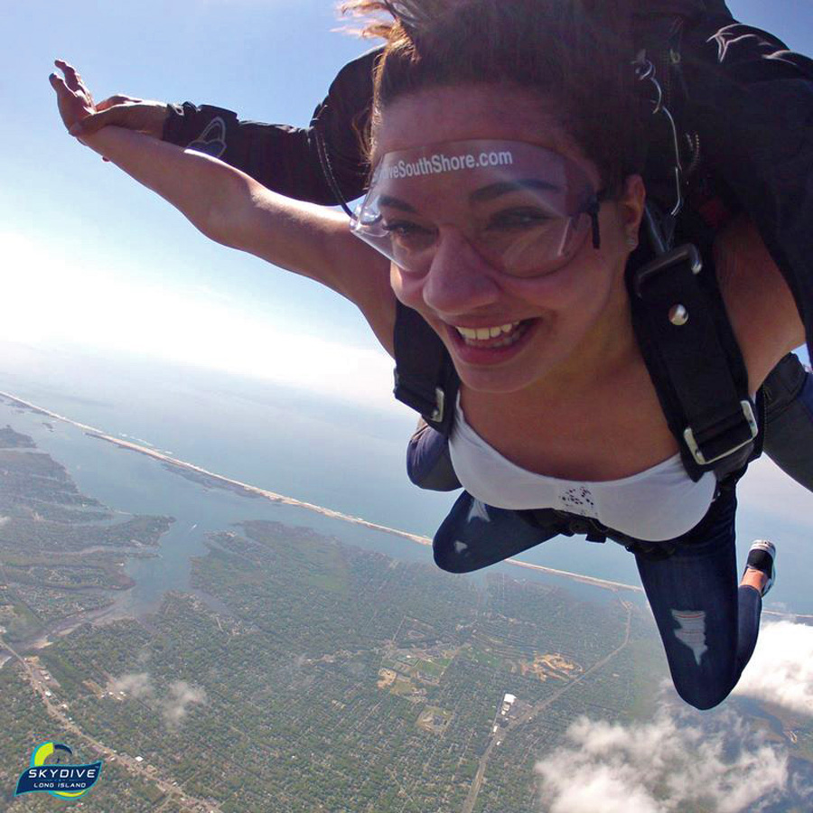

"If I could stand in an open airplane doorway two-and-a-half miles above the ground and will myself to step into empty space, then I could do anything." - Dave Stein
"You oughta try it. You might learn something. You know, I was skydiving once and my main chute, it didn't open. I pulled my reserve and it didn't open either. There I was, plunging to the earth. Just as I hit the treetops I discovered the meaning of life." - Valerie Curtin
What is the SKYDIVING Experience Like? - SkyDive Long Island 2018
"I pop in my earbuds and play Danger Zone from Top Gun at full blast, six times. I'm ready to high-five my instructor and call her Goose by the time she comes to invite me over to the gear-up area. It's almost go time."
"Once I'm out the door, I realize that nothing could have prepared me for the sensation of skydiving. Nothing I have ever done before in my life could have given me a hint as to what it feels like to be falling-but-not-falling, flying-but-not-flying, supported by a column of the strongest wind I've ever felt in my life, holding palms full of it, pressing against it with my belly and my thighs. It's SO FAST but it's SO NOT and everything is in hyperbole: biggest, loudest, wildest, craziest, freest, MOST inspired, MOST joyful, MOST incredible. Freefall even makes me a hyperbole: ME-est. Up here, doing this, I am the ME-est I've ever been."
"I realize I stopped being scared when my feet left the plane. I smile, realizing it's probably just like that for everything else I'm scared of, too."
"When I land, I feel like a new person. I get a hug from my tandem instructor, who's looking at me like she knows exactly what just happened to me, in a way that I'm not sure even *I* do yet. I feel like there's nothing I can't do. After all, I just jumped out of a plane."
